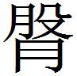
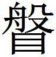

齊三
楚王死
楚王死〔一〕 ，太子在齊質〔二〕 。蘇秦〔三〕 謂薛公〔四〕 曰〔五〕 ：「君何不留楚太子，以市其下東國〔六〕 。」薛公曰：「不可。我留太子，郢中〔七〕 立王，然則是我抱空質〔八〕 而行不義於天下也。」蘇秦曰：「不然。郢中立王，君因謂其新王曰：『與我下東國，吾為王殺太子。不然，吾將與三國共立之〔九〕 。』然則下東國必可得也。」
〔一〕 姚本 懷王也。為張儀所欺，西與秦昭王會武關，秦脅與歸，而死於秦也。
〔二〕 鮑本 楚二十九年，使太子質於齊，名橫，是為頃襄王。按史 ，楚三十年，懷王入秦，秦留之，明年頃襄王立，立三年懷王乃死。與此駮。
〔三〕 鮑本 「秦」作「子」。秦死至是二十年矣，此非代則厲也。補曰：字誤，下並同。
〔四〕 姚本 薛公，田嬰也，田文之父。鮑本 田文。
〔五〕 札记 今本誤重「曰」字。
〔六〕 姚本 市，猶求也。下東國，楚東邑，近齊也。鮑本 楚策 云，「與我東地」。蓋楚國之東，其地近齊，楚地高而此下。
〔七〕 姚本 郢，楚都也。
〔八〕 姚本 楚自立王，質之無益，故曰「抱空質」也。
〔九〕 鮑本 齊嘗與秦、韓、魏敗楚，三國謂此。重立。
蘇秦之事〔一〕 ，可以請行；可以令楚王〔二〕 亟入〔三〕 下東國；可以益割〔四〕 於楚；可以忠太子而使楚益入地；可以為楚王走太子；可以忠太子使之〔五〕 亟去；可以惡蘇秦於薛公；可以為蘇秦請封於楚；可以使人說〔六〕 薛公以善蘇子；可以使蘇子自解於薛公。
〔一〕 鮑本 此著書者敘說。
〔二〕 鮑本 並新王。
〔三〕 姚本 亟，速也。入，猶致也。
〔四〕 姚本 益，多。割，取。
〔五〕 姚本 一本無「之」字。
〔六〕 姚本 一本無「人說」二字。
蘇秦謂薛公曰：「臣聞謀泄者事無功，計不決者名不成。今君留太子〔一〕 者，以市下東國也。非亟得下東國者，則楚之計變，變則是君抱空質而負名於天下也〔二〕 。」薛公曰：「善。為之奈何？」對曰：「臣請為君之楚，使亟入下東國之地。楚得成〔三〕 ，則君無敗矣。」薛公曰：「善。」因遣之〔四〕 。
〔一〕 姚本 太子，懷王太子也。鮑本 「太」上有「楚」字。
〔二〕 姚本 變，改也。負天下不義之名。
〔三〕 鮑本 得，猶與也。齊求地而楚與之，為得成。
〔四〕 姚本 故曰「可以請行」也（曾，此七字不作注）。鮑本 「之」下有「故曰可以請行也」七字。元作注字。此類亦著書者敘說。補曰：敘說者分其文而屬之，故以此著例。
謂楚王〔一〕 曰：「齊欲奉太子而立之〔二〕 。臣觀薛公之留太子者，以市下東國也。今王不亟入下東國，則太子且倍〔三〕 王之割而使齊奉己〔四〕 」。楚王曰：「謹受命。」因獻下東國。故曰可以使楚亟入地也。
〔一〕 鮑本 以為懷王，則上言已死；以為頃襄，則頃襄即太子也；以為新立王，則頃襄外無他王。未詳。
〔二〕 姚本 蘇秦請行至楚，說楚王曰，所立頃襄王也。言楚所欲立懷王。
〔三〕 鮑本 倍，多於前。
〔四〕 姚本 己，太子也。使齊奉己，立以為王也。
謂薛公曰：「楚之勢可多割也。」薛公曰：「奈何？」「請告太子其故〔一〕 ，使太子謁之君〔二〕 ，以忠太子〔三〕 ，使楚王聞之，可以益入地。」故曰可以益割於楚。
〔一〕 鮑本 謂告蘇子辭也，告以楚獻地之故。
〔二〕 鮑本 君，薛公也。使太子白以亦欲割地。
〔三〕 姚本 告，致。致故，謂太子倍割楚以許齊也。謁，告。告齊君也。齊得割則歸太子，故曰「以忠太子」。
謂太子曰：「齊奉太子而立之，楚王請割地以留太子，齊少其地〔一〕 。太子何不倍楚之割地而資〔二〕 齊，齊必奉太子。」太子曰：「善。」倍楚之割而延齊〔三〕 。楚王聞之恐，益割地而獻之，尚恐事不成。故曰可以使楚益入地也。
〔一〕 姚本 割地與齊，使留太子，齊嫌其少也。
〔二〕 姚本 資，與。
〔三〕 姚本 延，猶饒也，及也。鮑本 延，長行也，故有饒益意。
謂楚王曰：「齊之所以敢〔一〕 多割地者，挾太子也。今已得地而求不止者，以太子權〔二〕 王也。故臣能去太子〔三〕 。太子去，齊無辭，必不倍〔四〕 於王也〔五〕 。王因馳〔六〕 強齊而為交，齊辭〔七〕 ，必聽王。然則是王去讎〔八〕 而得齊交也。」楚王大悅，曰：「請以國因〔九〕 。」故曰可以為楚王使太子亟去也。
〔一〕 鮑本 無「敢」字。
〔二〕 姚本 權，重。鮑本 權者，輕重所在。
〔三〕 鮑本 使人去齊。
〔四〕 鮑本 多割。
〔五〕 姚本 齊無立太子辭，必不倍求地於王也。
〔六〕 鮑本 馳，亟往。
〔七〕 姚本 一作「而為交於齊，齊辭」。鮑本 齊之說。
〔八〕 姚本 讎，為太子。
〔九〕 鮑本 因蘇子交齊。
謂太子曰：「夫剬楚者王也〔一〕 ，以空名巿者太子也，齊未必信太子之言也，而楚功見矣〔二〕 。楚交成，太子必危矣。太子其圖之。」太子曰：「謹受命。」乃約車而暮去。故曰可以使太子急去也。
〔一〕 鮑本 剬，斷，齊也，猶制。補曰：剬，本多丸反。史 、漢 作「制」字。正義 論字例云。
〔二〕 姚本 齊未必信太子言也，而楚便致地，故曰「楚功見」。鮑本 功，謂入地。
蘇秦使人請薛公曰：「夫勸留太子者蘇秦也。蘇秦非誠以為君也，且以便楚也〔一〕 。蘇秦恐君之知之，故多割楚以滅跡也〔二〕 。今勸太子者〔三〕 又蘇秦也，而君弗知，臣竊為君疑之。」薛公大怒於蘇秦。故曰可〔四〕 使人惡蘇秦於薛公也。
〔一〕 鮑本 太子去楚之便也。
〔二〕 鮑本 沒其便楚之跡。
〔三〕 鮑本 「者」上補「去」字。補曰：一本標晁本有。
〔四〕 鮑本 「可」下有「以」字。
又使人謂楚王曰：「夫使薛公留太子者蘇秦也，奉王而代立楚太子者〔一〕 又蘇秦也，割地固〔二〕 約者又蘇秦也，忠王而走太子者又蘇秦也。今人惡蘇秦於薛公，以〔三〕 其為齊薄而為楚厚也。願王之〔四〕 知之。」楚王曰：「謹受命。」因封蘇秦為武貞君〔五〕 。故曰可以為蘇秦請封於楚也。
〔一〕 鮑本 代太子立為王。
〔二〕 鮑本 「固」作「因」。因為之約齊。補曰：一本「固約」。
〔三〕 鮑本 「以」上有「之」字。
〔四〕 姚本 劉無「之」字。
〔五〕 姚本 武貞，楚邑。鮑本 封以美名，非邑。
又使景鯉〔一〕 請薛公曰：「君之所以重於天下者，以能得天下之士而有齊權也〔二〕 。今蘇秦天下之辯士也，世與少有〔三〕 。君因〔四〕 不善蘇秦，則是圍塞天下士而不利說途也〔五〕 。夫不善君者且奉蘇秦，而於君之事殆矣〔六〕 。今蘇秦善於楚王，而君不蚤親，則是身與楚為讎也〔七〕 。故君不如因而親之，貴而重之，是君有楚也。」薛公因善蘇秦。故曰可以為蘇秦說薛公以善蘇秦〔八〕 。〔九〕
〔一〕 姚本 景，姓；鯉，名也。楚懷王相也。
〔二〕 姚本 言薛公所見重於天下者，能得天下士之心，故有齊國權勢也。
〔三〕 鮑本 言如之者少。
〔四〕 姚本 劉作「固」。
〔五〕 姚本 途，道。
〔六〕 姚本 於，治。曾本無此二字注。鮑本 於，猶與。
〔七〕 鮑本 此亦非薛公之恐。楚王立，未能自定，安能難齊哉？故彪於楚策 謂蘇子以此策 干薛公，不見用，世猶載其語也。正曰：謂不親楚則與楚為讎，以事理言爾。于薛公不用，世猶載其語，亦臆度之辭。
〔八〕 姚本 蘇秦巧辭反覆，且在此以上也。
〔九〕 鮑本 按：此則懷王死，楚立新王，太子卒不得立。而頃襄非太子也。史 不謂然，故其書東國之事亦略。補曰：史稱懷王入秦，而頃襄立；策獨以為懷王死，而頃襄立，前後屢見。竊以事勢言之，楚人知懷王之必不歸，而秦要之以割地，故立王以絕君。而喪君有君，所以靖國，頃襄之立，非懷王死後明矣。史 謂，當時以詐赴之，策 猶仍之爾，特所謂新王及太子不可曉。然以逐節考之，皆有事實，又非飾說也。或者太子未返之時，郢中立王邪！姑缺所疑。「為之」、「為交」、「為武」、「為讎」之「為」，如字。
齊王夫人死
齊王〔一〕 夫人死，有七孺子〔二〕 皆〔三〕 近〔四〕 。薛公欲知王所欲立〔五〕 ，乃獻七珥〔六〕 ，美其一，明日視美珥所在，勸王立為夫人〔七〕 。〔八〕
〔一〕 姚本 齊威王子宣王也。
〔二〕 姚本 孺子，幼艾美女也。
〔三〕 鮑本 「皆」上有「者」字。札记 丕烈案：韓子 作「中有十孺子，皆貴於王」。
〔四〕 姚本 近，幸也。鮑本 言其親幸。
〔五〕 姚本 立為夫人。
〔六〕 鮑本 瑱也，所以充耳。
〔七〕 姚本 服美珥，則知王之所愛矣，故勸王立之也。
〔八〕 鮑本 補曰：與楚策 謂昭魚云云類，韓非子 、淮南子 皆有。
孟嘗君將入秦
孟嘗君〔一〕 將入秦〔二〕 ，止者千數而弗聽。蘇秦〔三〕 欲止之，孟嘗曰〔四〕 ：「人事者，吾已盡知之矣；吾所未聞〔五〕 者，獨鬼事耳。」蘇秦曰：「臣之來也，固不敢言人事也，固且以鬼事見君。」
〔一〕 姚本 一作孟嘗。
〔二〕 姚本 孟嘗君，薛公田嬰號靖郭君，子（「子」一作「又」）文號孟嘗君也。鮑本 傳 言，秦昭王聞其賢，求見之，故將入。
〔三〕 鮑本 「秦」作「代」。補曰：字誤，宜作「代」，下同。後語 並作「代」。札记 今本「秦」作「代」，乃誤涉鮑也。丕烈案：風俗通·祀典 引此文亦作「秦」。鮑以史記·孟嘗君列傳 改為「代」，未是也。李善注文選 引蘇秦說孟嘗君曰「秦四塞之國」，高誘注云「四面有山關之固，故曰四塞之國也」，在此篇，亦其證。說苑 載作「客」，當是改也。
〔四〕 鮑本 「曰」上有「君」字。
〔五〕 姚本 聞，知。
孟嘗君見之。謂孟嘗君曰：「今者〔一〕 臣來，過於淄上〔二〕 ，有土偶人〔二〕 與桃梗〔四〕 相與語。桃梗謂土偶人曰：『子，西岸之土也，挺〔五〕 子以為人，至歲八月，降雨下〔六〕 ，淄水至，則汝殘〔七〕 矣。』土偶曰：『不然。吾西岸之土也，土則〔八〕 復西岸耳。今子，東國之桃梗也，刻削子以為人，降雨下，淄水至，流子而去，則子漂漂者將何如耳〔九〕 。』今秦四塞之國〔一〇〕 ，譬若〔一一〕 虎口，而君入之，則臣不知君所出矣。」孟嘗君乃止〔一二〕 。〔一三〕
〔一〕 鮑本 無「者」字。札记 丕烈案：風俗通 引作「臣之來也」。說苑 同。
〔二〕 鮑本 淄水出太山萊蕪原。
〔三〕 鮑本 偶，相人也，比土為之。正曰：索隱 云，偶，類於人也。
〔四〕 姚本 東海中有山，名曰度朔，上有大桃，屈槃三千里，其卑枝間東北曰鬼門，萬鬼所由往來也。上有二神人，一曰荼與，一曰鬱雷，主治害鬼。故使世人刻此桃梗，畫荼與與鬱雷首，正歲以置門戶，辟號之門。荼與、鬱雷，皆在東海中，故曰「東國之桃梗」也。鮑本 集韻 ，梗，略也，荒也。正曰：梗，枝梗也。趙策·蘇秦說李兌 作「土梗」、「木梗」。謂木梗曰，「汝非木之根，則木之枝」。是枝、根皆可言梗。此謂刻桃木為人也。史 及說苑 作「土偶人」、「木偶人」。索隱 謂，以土偶比涇陽君，木偶比孟嘗君。時秦昭王使涇陽君為質以求孟嘗。高誘注，「荼」一本作「余」。
〔五〕 姚本 挺，治。鮑本 挺，拔也，拔於土中。正曰：挺，他鼎反，有也。藝文類聚 及晁本作「埏」。札记 今本「挺」誤「梃」。丕烈案：風俗通 引作「埏」。此字當作「挻」。「挻」、「埏」同字，形近而訛作「挺」耳。說苑 作「持」，亦誤字。
〔六〕 鮑本 降，大雨自上下也，異於飄洒。
〔七〕 姚本 殘，壞。
〔八〕 姚本 一作「吾殘則」。
〔九〕 鮑本 「何如」作「如何」。如，往也。不知其所在。正曰：如，恐止是語助。札记 丕烈案：風俗通 引「將何如矣」。
〔一〇〕 姚本 四面有山關之固，故曰「四塞之國」也。
〔一一〕 鮑本 「若」作「如」。札记 丕烈案：風俗通 引作「若」。
〔一二〕 姚本 止，猶還也。
〔一三〕 鮑本 傳 有。補曰：此時不行，其入秦蓋在後。
孟嘗君在薛
孟嘗君在薛〔一〕 ，荊人攻之。淳于髡為齊使於荊，還反過薛。而孟嘗〔二〕 令人體〔三〕 貌而親〔四〕 郊迎之。謂淳于髡曰：「荊人攻薛，夫子弗憂，文〔五〕 無以復侍矣〔六〕 。」淳于髡曰：「敬聞命〔七〕 。」
〔一〕 鮑本 史 言文代立在薛，時未相也。補曰：代立在薛，歸老亦在薛，此不可知為何時。
〔二〕 姚本 一作「孟嘗君」。鮑本 「而孟嘗」作「孟嘗君」。札记 丕烈案：呂氏春秋 作「孟嘗君」。
〔三〕 姚本 「體」一作「禮」。劉作「體」。鮑本 有禮容也。
〔四〕 鮑本 無「親」字。札记 丕烈案：呂氏春秋 有。
〔五〕 姚本 文，孟嘗君名也。
〔六〕 鮑本 言且死。
〔七〕 姚本 下一有「矣」字。
至於齊，畢報〔一〕 。王曰：「何見於荊？」對曰：「荊甚固，〔二〕 而薛亦不量其力。」王曰：「何謂也？」對曰：「薛不量其力，而為先王〔三〕 立清廟〔四〕 。荊固而攻之，清廟必危。故曰薛不量力，而荊亦甚固。」齊王〔五〕 和其顏色曰：「譆〔六〕 ！先君之廟在焉！」疾興兵救之。
〔一〕 鮑本 以使事悉報齊王。
〔二〕 鮑本 言其不通。
〔三〕 姚本 先王，威王。
〔四〕 鮑本 詩注，祭有清德之宮。正曰：按本文，有清明之德者之宮。
〔五〕 姚本 齊宣王也，威王之子。
〔六〕 鮑本 集韻 ，痛也。正曰：徐云，痛而呼之言也。和其顏色，聽其言也；痛而呼之，傷宗廟也。初不相礙。
顛蹶之請〔一〕 ，望拜之謁〔二〕 ，雖得則薄矣〔三〕 。善說者，陳其勢，言其方〔四〕 ，人之急也〔五〕 ，若自在隘〔六〕 窘之中，豈用強力哉〔七〕 ！
〔一〕 鮑本 此著書者詞也。言善說者，不勞而功。顛，倒；蹶，僵也。言其請救之遽。
〔二〕 鮑本 望而拜之，言謁之恭。
〔三〕 姚本 言雖顛蹶而走，請救於齊，望仰而訴告之，而得齊救，比淳于之辭，則為薄也。鮑本 言他人請，謂雖有得，不如髡之厚。
〔四〕 鮑本 方，大略也。
〔五〕 鮑本 言應之疾。
〔六〕 鮑本 隘，險也。
〔七〕 姚本 言辯者之說，人急其如己自在阨窘之中，欲速免脫也。故曰「豈強力也哉」！
孟嘗君奉夏侯章
孟嘗君奉夏侯章〔一〕 以四馬百人之食〔二〕 ，遇之甚懽。夏侯章每言未嘗不毀〔三〕 孟嘗君〔四〕 也。或以告孟嘗君，孟嘗君曰：「文有以事夏侯公矣，勿言〔五〕 ，董之。」繁菁〔六〕 以問夏侯公，夏侯公曰：「孟嘗君重〔七〕 非諸侯也，而奉我四馬百人之食。我無分寸之功而得此，然吾毀之以為之也〔八〕 。君所以得為長者〔九〕 ，以吾毀之者也〔一〇〕 。吾以身為孟嘗君，豈得持言也〔一一〕 。」〔一二〕
〔一〕 鮑本 齊人。正曰：無考。下同。
〔二〕 鮑本 言饗之厚。
〔三〕 姚本 毀，謗。
〔四〕 鮑本 「孟嘗君」三字作「之」。
〔五〕 姚本 言，道也。鮑本 言事之厚，彼不害我。
〔六〕 姚本 「菁」，曾作「青」。鮑本 「繁」作「蘩」。齊人。
〔七〕 姚本 重，尊。
〔八〕 姚本 欲以為分寸之功也。
〔九〕 鮑本 賢有容之稱。高祖曰，為其母不長者。
〔一〇〕 姚本 以吾毀之無憾言，故得為長者。鮑本 無下「者」字。補曰：一本「以吾毀之者也」。「者」字，恐是「長者」字下脫衍在此。
〔一一〕 姚本 劉作「豈特言也哉」。鮑本 「持」作「待」。補曰：「持」者「待」之訛，「得」者「待」之訛衍。
〔一二〕 鮑本 彪謂：君子所以報知我者，亦多術矣，豈必毀之而後為之哉？此其說有似侯嬴而不及嬴，非正議也。
孟嘗君讌坐
孟嘗君讌〔一〕 坐，謂三先生〔二〕 曰：「願聞先生有〔三〕 以補〔四〕 之〔五〕 闕者〔六〕 。」一人曰：「訾天下之主〔七〕 ，有侵君者〔八〕 ，臣請〔九〕 以臣之血湔〔一〇〕 其衽。」田瞀〔一一〕 曰：「車軼〔一二〕 之所能至，請掩足下之短者〔一三〕 ，誦足下之長；千乘之君與萬乘之相，其欲有〔一四〕 君也，如使而弗及也。〔一五〕 」勝

〔一六〕 曰：「臣願以足下之府庫財物，收天下之士，能為君決疑應卒〔一七〕 ，若魏文侯之有田子方、段干木也〔一八〕 。此臣之所為君取矣〔一九〕 。」〔一〕 鮑本 讌，合語也。正曰：「讌」即「燕」。
〔二〕 姚本 先生，長老，先己以生者也。
〔三〕 姚本 劉無「有」字。
〔四〕 姚本 一本有「文」字。
〔五〕 鮑本 「之」作「文」。
〔六〕 姚本 願聞賢者之善言，常補己缺失也。鮑本 「者」下有「也」字。
〔七〕 鮑本 訾，不稱意也。言孟嘗有不得意於諸侯。
〔八〕 鮑本 侵，淩之也。
〔九〕 姚本 「請」，集、曾、劉作「輕」。
〔一〇〕 姚本 湔，汙也。湔灑。鮑本 「湔」，「濺」同。集韻 ，水激也。
〔一一〕 姚本 瞀，晉、鄭游眅。續：「瞀」恐作「

」。春秋傳 ，鄭游眅字子明，或作「 」。〔一二〕 姚本 軼也。轍曰軼。
〔一三〕 鮑本 無「者」字。補曰：疑當在「至」字下。
〔一四〕 姚本 「有」或作「又」。鮑本 有，言欲得之。
〔一五〕 鮑本 若有使之，如恐弗及。
〔一六〕 鮑本 「勝」作「滕」，「 」，作「臀」。字書無之，亦可作「股」，齊人。補曰：姚云，恐作「 」。札记 丕烈案：姚校在上「田瞀」下，乃據高注。吳誤以當此「 」字，亦有誤。但所改未是。
〔一七〕 鮑本 與「猝」同。
〔一八〕 姚本 文敬交田子方，而敬段干木也。鮑本 二人文侯師友。
〔一九〕 鮑本 求以此為孟嘗所取。正曰：為孟嘗取此人也。
孟嘗君舍人有與君之夫人相愛者
孟嘗君舍人有與君之夫人〔一〕 相愛〔二〕 者。或以問〔三〕 孟嘗君曰：「為君舍人而內與夫人相愛，亦甚不義矣，君其殺之〔四〕 。」君曰：「睹貌而相悅者，人之情也，其錯〔五〕 之勿言也。」
〔一〕 鮑本 夫人，姬媵之過稱，非其配也。與下十妃同。
〔二〕 姚本 愛，猶通也。
〔三〕 姚本 曾作「聞」。問，告。
〔四〕 姚本 傳 曰，淫為大罰。故曰殺之。
〔五〕 姚本 錯，置。鮑本 「錯」，「措」同也。
居期年，君召愛夫人者而謂之曰：「子與文游久矣，大官未可得，小官公又弗欲。衛君〔一〕 與文布衣交〔二〕 ，請具車馬皮幣〔三〕 ，願君以此從衛君遊。」於〔四〕 衛甚重。
〔一〕 鮑本 嗣君。
〔二〕 鮑本 言交於未貴時。
〔三〕 姚本 皮，鹿皮。幣，束帛也。鮑本 皮，羔狐之屬。宗伯 ，孤執皮帛。正曰：羔乃生贄，狐皮無據。禮 注，皮帛者，束帛而表以虎豹皮為飾。宗伯 之制，恐難引以言此。
〔四〕 鮑本 「於」上補「舍人遊」三字。
齊、衛之交惡〔一〕 ，衛君甚欲約天下之兵以攻齊。是人謂衛〔二〕 君曰：「孟嘗君不知臣不肖，以臣欺君〔三〕 。且臣聞齊、衛先君，刑馬壓羊〔四〕 ，盟曰：『齊、衛後世無相攻伐，有相攻伐者，令其命如此〔五〕 。』今君約〔六〕 天下之兵以攻齊，是足下倍先君盟約而欺孟嘗君也。願君勿以齊為心〔七〕 。君聽臣則可；不聽臣，若臣不肖也〔八〕 ，臣輒以頸血湔足下衿〔九〕 。」衛君乃止。
〔一〕 姚本 惡，不睦也。
〔二〕 鮑本 無「衛」字。
〔三〕 鮑本 欺者，己不肖，而孟嘗言其賢也。
〔四〕 姚本 殺馬、羊，喢出其血，以相盟誓也。壓，亦殺也。鮑本 殺馬歃其血，又壓羊殺之以盟，使諭者如此。
〔五〕 姚本 如此馬與羊也。
〔六〕 姚本 約，結。
〔七〕 姚本 無以伐齊為心。
〔八〕 鮑本 言或以此人為不肖。補曰：「若」疑「者」字訛。
〔九〕 鮑本 交衽也。
齊人聞之曰：「孟嘗君可語〔一〕 善為事矣，轉禍為功〔二〕 。」〔三〕
〔一〕 姚本 集、劉作「謂」。鮑本 言可與語。正曰：姚云，「語」，劉作「謂」，宜至「矣」字句。
〔二〕 姚本 不殺其舍人，是轉禍；使齊不伐，是為功？
〔三〕 鮑本 彪謂：周衰，禮義消亡，以若孟嘗者，為能愛士。愛則愛矣，然非禮之愛也。以若舍人者，為能強爭。強則強矣，然亦非義之強也。補曰：事亦可醜，而論著者以為美談邪！袁盎從史 事類此。
孟嘗君有舍人而弗悅
孟嘗君有舍人而弗悅〔一〕 ，欲逐之。魯連〔二〕 謂孟嘗君曰：「猿獮猴錯木據水〔三〕 ，則不若魚鱉〔四〕 ；歷險乘危，則騏驥不如狐狸〔五〕 。曹沫之〔六〕 奮三尺之劍，一軍不能當〔七〕 ；使曹沫釋其三尺之劍，而操銚鎒與農夫居壟畝之中〔八〕 ，則不若農夫。故物舍其所長，之〔九〕 其所短，堯亦有所不及矣〔一〇〕 。今使人而不能，則謂之不肖；教人而不能，則謂之拙。拙則罷之，不肖則棄之，使人有棄逐，不相與處〔一一〕 ，而來害相報者〔一二〕 ，豈非世之立教首也哉〔一三〕 ！」孟嘗君曰：「善。」乃弗逐。〔一四〕
〔一〕 姚本 悅，敬。
〔二〕 鮑本 齊人仲連。
〔三〕 姚本 錯，置也。據，處也。猿彌猴置木而處於水，則不如魚鱉之便也。鮑本 言自置木上。據，猶處。補曰：「錯木據水」一句。錯，舍置也。
〔四〕 鮑本 「鱉」下有「處」字。補曰：姚本 無。或上「據」字訛而脫在此，作「處水」勝。札记 丕烈案：此高注字之誤入正文者。
〔五〕 姚本 各有所宜。
〔六〕 姚本 曹沫，魯莊公士也。傳 曰，曹劌也。鮑本 衍「之」字。
〔七〕 鮑本 魯記，莊公與齊桓公會柯，沫執匕首劫桓公，歸魯侵地。
〔八〕 鮑本 壟，田埒。補曰：銚，七遙反，與鍬同。鎒，呼高反，說文 ，拔去田草也，即薅。
〔九〕 鮑本 之，猶於。
〔一〇〕 姚本 舍，收也。之，猶用也。收所長者，用所短者，故堯有所不能及為也。
〔一一〕 鮑本 言黨友以此士見棄逐，不屑與處。
〔一二〕 鮑本 棄逐者必之他國，自彼來而害我，報其棄逐之怨。
〔一三〕 鮑本 言後人視此為戒。
〔一四〕 鮑本 彪謂：仲連，立言士也，言必有中。
孟嘗君出行國至楚
孟嘗君出行國〔一〕 ，至楚，獻象床〔二〕 。郢之登徒〔三〕 ，直使送之，不欲行〔四〕 。見孟嘗君門人公孫戍〔五〕 曰：「臣，郢之登徒也，直送象床。象床之直千金，傷此若髮漂〔六〕 ，賣妻子不足償之。足下〔七〕 能使僕無行，先人有寶劍，願得獻之。」公孫〔八〕 曰：「諾〔九〕 。」
〔一〕 鮑本 按，行，之。行，兼相他國故。正曰：行，當去聲。
〔二〕 鮑本 象齒為床。
〔三〕 鮑本 楚官也。好色賦 登徒子注，以為姓，非。正曰：屈平為左徒，考烈王以左徒為令尹。鮑見此，故以登徒為官名，未見所據。然彼云大夫登徒子，則非官名。
〔四〕 姚本 直，當，曰直使也。登徒直使，不欲行送象床。
〔五〕 鮑本 「戍」作「戌」。補曰：戌音恤。札记 丕烈案：吳氏音恤者非。
〔六〕 姚本續 ：別本「髮沖」。通鑑 「毫髮」。鮑本 「漂」，「飄」同，言其細若絲髮。
〔七〕 姚本 足下，謂公孫戍。
〔八〕 鮑本 「孫」下補「戌」字。
〔九〕 姚本 獻，獻公孫戍也。故曰「諾」。
入見孟嘗君曰：「君豈受楚象床哉？」孟嘗君曰：「然。」公孫戍曰：「臣願君勿受。」孟嘗君曰：「何哉？」公孫戍曰：「小國〔一〕 所以皆致相印於君者，聞君於齊能振達貧窮，有存亡繼絕之義。小國英桀〔二〕 之士，皆以國事累君〔三〕 ，誠〔四〕 說君之義，慕君之廉也。今君到楚而受象床，所未至之國，將何以待君〔五〕 ？臣戍願君勿受。」孟嘗君曰：「諾。」
〔一〕 鮑本 補曰：「小國」疑當作「大國」。後語 作「五國」，蓋首句作「出行五國」也。
〔二〕 姚本 才勝萬人曰「英」，千人曰「桀」。
〔三〕 姚本 累，屬。鮑本 累，猶諉。諉之以事，所以累之。
〔四〕 鮑本 無「誠」字。
〔五〕 姚本 待，猶共也。
公孫戍趨而去。未出，至中閨〔一〕 ，君召而返之，曰：「子教文無受象床，甚善〔二〕 。今何舉足之高，志之揚也？」公孫戍曰：「臣有大喜三，重〔三〕 之寶劍一。」孟嘗君曰：「何謂也？」公孫戍曰：「門下百數，莫敢入諫，臣獨入諫，臣一喜；諫而得聽，臣二喜；諫而止君之過，臣三喜。輸〔四〕 象床，郢之登徒不欲行，許戍以先人之寶劍。」孟嘗君曰：「善。受之乎？」公孫戍曰：「未敢。」曰：「急受之。」因書門版曰：「有能揚文之名，止文之過，私得寶於外者，疾入諫。」〔五〕
〔一〕 姚本 閨，閎也。鮑本 特立之戶，上圜下方。
〔二〕 姚本 善，快。
〔三〕 鮑本 重，言三喜外，復有此。
〔四〕 鮑本 輸，亦送也。
〔五〕 鮑本 彪謂：孟嘗君於是能立德矣！吾知欲止吾過而已，彼得寶，於我庸何傷？且諫者，士之所難，因得寶而摧折之，後孰敢以過聞乎吾哉？
淳于髡一日而見七人於宣王
淳于髡〔一〕 一日而見七人〔二〕 於宣王。王曰：「子來，寡人聞之，千里而一士，是比肩而立〔三〕 ；百世而一聖，若隨踵而至〔四〕 也〔五〕 。今子一朝而見七士，則士不亦眾乎？」淳于髡曰：「不然。夫鳥同翼者而聚居，獸同足者而俱〔六〕 行〔七〕 。今求柴葫、桔梗於沮澤〔八〕 ，則累世不得一焉。及之睪黍、梁父之陰〔九〕 ，則郄車而載耳〔一〇〕 。夫物各有疇〔一一〕 ，今髡賢者之疇也。王求士於髡，譬〔一二〕 若挹〔一三〕 水於河，而取火於燧〔一四〕 也。髡將復見之，豈特七士也〔一五〕 。」〔一六〕
〔一〕 鮑本 齊人，見滑稽傳 。
〔二〕 姚本 人，一作士。
〔三〕 鮑本 比，謂肩相次也。言士難得，千里有一，猶為並肩也。
〔四〕 姚本 曾，「至」一作「生」。劉作「主」。
〔五〕 姚本 言雖中也。
〔六〕 姚本 俱，侶。
〔七〕 鮑本 補曰：後語 ，鳥同翼者聚飛，獸同足者俱亡。
〔八〕 姚本 桔梗，山生之草也（曾作「生山之上也」，集作「山之中」）。於沮澤求之，雖累世不能得其一也。鮑本 二草，山生。而沮，水也，故求不可得。孟子 注，沮澤，生草者，水名，出漢中。正曰：沮澤，但言漸濕之地，如漢書 所謂生於沮澤之中者，不必因下文求地名以實之。
〔九〕 姚本 睪黍、梁父皆山名也。山北曰陰，桔梗生焉。言饒多也，故曰郄車載也。鮑本 地缺。疑為負黍，蓋此與梁父皆東地也。梁父在泰山。山北曰陰。補曰：高注，睪黍、梁父皆山名。愚按，「皋」字或作「睪」。
〔一〇〕 鮑本 「郄」，「卻」同。言多獲，車重不前。
〔一一〕 姚本 疇，類。鮑本 耕治之田，禾所聚也，故為類。
〔一二〕 鮑本 無「譬」字。
〔一三〕 鮑本 挹，酌也。
〔一四〕 鮑本 夫燧，鑒也。
〔一五〕 姚本 言將復見士於王也。
〔一六〕 鮑本 補曰：兩「見」字，賢遍反。
齊欲伐魏
齊欲伐魏。淳于髡謂〔一〕 齊王曰：「韓子 盧者，天下之疾犬也。東郭逡〔二〕 者，海內之狡〔三〕 兔也。韓子 盧逐東郭逡，環〔四〕 山者三，騰山者五，兔極於前，犬廢於後，犬兔俱罷，各死其處。田父見之，無勞勌之苦〔五〕 ，而擅〔六〕 其功。今齊、魏久相持，以頓〔七〕 其兵，弊其眾，臣恐強秦大楚承其後，有田父之功。」齊王懼，謝〔八〕 將休士也〔九〕 。〔一〇〕
〔一〕 鮑本 「謂」作「為」。補曰：此書「為」、「謂」字通用。
〔二〕 鮑本 逡，㕙同，狡兔名。
〔三〕 鮑本 集韻 ，狡，獪也，疾也。
〔四〕 姚本 環，旋。
〔五〕 姚本 苦，勤。
〔六〕 鮑本 擅者，無與爭也。
〔七〕 鮑本 頓，亦勞敝。
〔八〕 鮑本 謝，辭去之，言不用也。
〔九〕 鮑本 無「也」字。
〔一〇〕 鮑本 補曰：此與蘇代鷸蚌、陳軫虎爭人之說，異而同者也。逡，七倫反。
國子曰秦破馬服君之師〔校一〕
〔校一〕 此篇姚本與齊欲伐魏 連篇，鮑本另列一篇。據文義，從鮑本。
國子〔一〕 曰：「秦破馬服君〔二〕 之師，圍邯鄲。齊、魏亦佐秦伐邯鄲，齊取淄鼠，魏取伊是〔三〕 。公子無忌〔四〕 為天下循便計〔五〕 ，殺晉鄙〔六〕 ，率魏兵以救邯鄲之圍，使秦弗有而失天下〔七〕 。是齊入於魏而救邯鄲之功也〔八〕 。安邑者，魏之柱國也；〔九〕 晉陽者，趙之柱國也；鄢郢者，楚之柱國也。故三國欲〔一〇〕 與秦壤界〔一一〕 ，秦伐魏取安邑，伐趙取晉陽，伐楚取鄢郢矣。福〔一二〕 三國之君〔一三〕 ，兼二周之地，舉韓氏取其地，且〔一四〕 天下之半。今又劫趙、魏，疏〔一五〕 中國，封〔一六〕 衛之東野〔一七〕 ，兼魏之河南〔一八〕 ，絕趙之東陽，則趙、魏亦〔一九〕 危矣。趙、魏危，則非齊之利也。韓、魏、趙、楚之志，恐秦兼天下而臣其君，故專兵一志以逆〔二〇〕 秦。三國之與秦壤界而患〔二一〕 急，齊不與秦壤界而患緩。是以天下之勢，不得不事齊也。故秦得齊，則權重於中國；趙、魏、楚得齊，則足以敵秦。故秦〔二二〕 、趙、魏得齊者重，失齊者輕。齊有此勢，不能以重於天下者何也？其用者過也。」〔二三〕
〔一〕 姚本 國子，齊大夫也。
〔二〕 姚本 馬服君，趙括也。秦將白起阬括四十萬眾於長平，而進圍邯鄲。括父奢，將有功，賜號馬服，因以為氏，故曰馬服君之師也。
〔三〕 姚本 淄鼠、伊是，皆趙邑也。鮑本 「是」作「氏」。皆趙地，缺。札记 丕烈案：「是」、「氏」同字。「伊是」即「伊氏」，不知者乃改之。
〔四〕 鮑本 魏信陵君。
〔五〕 鮑本 循，行順也。正曰：行便宜之計，言竊符奪兵事。補曰：齊、魏佐秦伐，因取二地。今云公子無忌云云，魏實救趙者，不應先佐之伐，恐當時無忌雖急於平原之請，而魏王實畏秦，如立晉鄙壁鄴，未欲真欲救趙，或先取其地也。
〔六〕 鮑本 魏將。
〔七〕 姚本 秦圍邯鄲，魏使晉鄙帥師救趙，畏秦不敢進軍，軍次蕩陰。趙國急，平原君勝使責信陵君公子無忌。無忌乃竊魏王所與晉鄙符信，以攝取其軍。晉鄙疑之，不肯授。乃使朱亥椎殺晉鄙，取軍救趙。故為天下備循計（曾無此七字，劉「循」作「脩」），解邯鄲圍。故曰「使秦不有而失天下」也。鮑本 魏安釐二十年，使鄙將以救趙。畏秦，不敢進。趙急，平原君使責無忌。無忌盜晉鄙兵符伐之，將進兵，秦軍解去。補曰：按史·年表 、魏世家 、公子無忌傳 ，公子矯殺晉鄙，破秦兵，皆在安釐王二十年。通鑑 以矯殺晉鄙在前一年。大事記 以晉鄙留軍壁鄴在前一年，謂以傳修。今按，傳亦止作一年事也。當考。
〔八〕 鮑本 齊與魏親，初雖佐秦，今魏救趙，亦同救也。
〔九〕 姚本 柱國，都也。鮑本 言其於國如室有柱。
〔一〇〕 鮑本 衍「欲」字。補曰：疑「欲」字即「故」字，而上衍「故」字。故者，舊也。札记 今本無「欲」字，乃誤涉鮑也。
〔一一〕 姚本 界，猶比也。鮑本 壤，土；界，境也。言其地相接。
〔一二〕 姚本 曾一作「覆」。劉一作「逼」。鮑本 「福」作「覆」。補曰：愚按，「福」乃「偪」之訛。「偪」義長。
〔一三〕 鮑本 「君」作「軍」。
〔一四〕 鮑本 且，猶幾。
〔一五〕 鮑本 疏，言離其友。
〔一六〕 姚本 封，續：用。別本改作「刲」，下同。刲，取。鮑本 封，割也。正曰：封，疆之也。札记 今本「封」誤「刲」。
〔一七〕 鮑本 東野，猶東地。
〔一八〕 鮑本 「南」作「內」。
〔一九〕 姚本 一本「亦」下有「已」字。
〔二〇〕 姚本 逆，距。鮑本 逆，謂拒之。
〔二一〕 姚本 三國，趙、魏、楚。界，比也。患，憂也。
〔二二〕 鮑本 「秦」下補「楚」字。正曰：疊句。上文宜有「楚」。札记 丕烈案：上文「楚」字在「魏」下。
〔二三〕 鮑本 補曰：三策 大概略同。謂三晉諸國為齊之屏蔽，相依為脣齒。秦攻諸國而齊不救，諸國滅亡，勢必及齊。第三章謂，三國與秦界而患急，齊不與秦壤而患緩；秦得齊則權重，趙、魏、楚得齊，則足以敵秦，說尤明切。初策 ，攻長平時；次策 ，周、韓未亡時；三策 ，則韓既亡後也。始皇十八年滅韓。自秦人行遠交近攻之術，善齊而不加兵，君王后謹事秦，王建不修戰備，不助五國，其墮秦計中久矣。長平之戰，當王建五年。滅韓，當三十五年。三十餘年間，士之為齊謀者，其智非不及此，而卒不用，宜其及於亡也！
本章完!